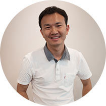
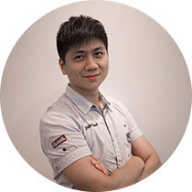
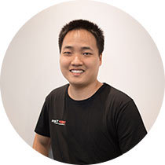

Guest Speaker
-
Billy Koh
K-Pop Rocks!— the untold Asian Kung-fu
Billy Koh (AKA Xǔ Huánliáng) is one of the most instrumental and influential figures in the Asian Chinese-Pop (C-Pop) music industry. Founder of Ocean Butterflies, he quit as CEO of Ocean Butterflies in 2014 to pursue his new business, Amusic Rights Management. (www.amusicrights.com )
In his 30-year long music career, Billy has produced more than 200 albums with many hits. He is the mentor who discovered & produced many successful Asian acts including Kit Chan, A-Do, JJ Lin and BY2.
Apart from speaking at international forums including MIDEM, Canadian Music Week and MacWorld Asia, Billy have been judging for many popular TV talent shows including "I am a Singer" ,"Supper Boy" in China, “One Million Star” and “Chinese Idol” in U.S., “Asia Song Festival” in South Korea, “Asia New Singer Competition” in Hong Kong and “Project SuperStar” in Singapore. -

Kongxiangdong
MUSIC: It’s the language of our souls
One of the most outstanding and most active Chinese pianists in the world music. He is also a charity and environment protection enthusiast, founder of Kong Xiang-dong music agency. He was hailed by the western media as " the only one, or one of the only two genius pianists in a century who can really excite people " and "a God's favored one".
Kong is a learner who regards learning as a source of happiness, and believes learning interesting is more important than learning useful; a music missionary regarding music as a common religion of people, believing “Music is an essential oxygen for humanity”; a music educator who have founded one of the largest music and art education institutions and bear the popularization of Chinese piano art as responsibility in China; a new media music advocator strolling in the official website of the "apple" every day for five years, to learn over 70000 Music App software, practicing the pursuit of dream that "everyone is the musicians themselves" with science and technology.
-
Xu Wei
My battle and peace with fashion
The smartest and most sharp “Devil Wears Prada” of China, 14 years’ chief editor of the world's largest top brand fashion magazine "Cosmo" .
After graduating from the Department of journalism, Renmin University of China in 1994, Xu served as a reporter in "Sanlian Life Weekly". In 1995, she changed as editor in a fashion magazine, and co-founded magazine “Esquire” in 1997. In 2001, Xu was transferred to "COSMO" as chief editor and served as Managing Director from 2014.
Xu Published a best selling book “love yourself as luxuries”, in which she believes that the “chicken soup” is a limit to the development of people, ”the heart sulphoacid” is truly self-help; the Sense of security is given by people themselves, we should love ourselves as love luxuries , always let ourselves Shine, and upgrade ourselves. Xu’s owns millions followers in Weibo, including many popular stars from the entertainment.
Tencent’s speaker
-

eaglezheng
Human vulnerability in cyber crime
ZhengLiPeng, also called “brother Eagle”, has a very keen sense of smell on cyber crime; own eight years’ experience to be a police, and once arrested the cyber criminals at night with temperature below minus 3 8 degrees Celsius in the suburb of Harbin city of HeiLongJiang Province; Met his wife now by striking a conversation difficultly in 2006 when shopping, so regretting not use the social network tools well at that time; Set foot in Internet security field in 2012 after resigned from civil service work to join Tencent, and committed to the “shake” function platform of Wechat now.
-
xiaoyichen
How to win 5 million lottery
A rationalist strayed into the gambling industry, once was a youth interested in the area of image application, but coincidentally stepped into the lottery industry. After constantly thinking- confusing-thinking, Chen came to understand the secrets to win the lottery finally, and set foot in the road of no return to become a life winner. There was often user asking him what is the first prize number by using share dividing as bait, you never guess what tricks he gave as answer.
-
sherry
Our Goal：No Advertising
Sherry, experts in field of precise effect advertising, also a veteran of Tencent SPA(social and performance Ads) In her ten years of career in Internet industry, she was committed to changing the pattern of traditional advertising industry through social networks, hoping that advertising can become a popular part of people’s life. Tencent, is not the first company to create an effect advertising platform in China's Internet industry, but it is the most obvious one to make the DNA of company rooted in its product. How it will be when a group of people with strong product thought engaged in marketing?
-

leohe
The story of me and the drones
A geek with strong curiosity, not courageous enough, but fanciful and reckless in the practicing of my own ideas, hence got the name XiaoTian(Little sky).In 2010 when the drones was not popular, Leo homemade a drone with low cost materials and took aerial photographs of the beautiful ocean and Sea Island by it, and successfully recovered the photography. He designed and manually created many walking chess games similar to Strong chess and Monopoly in Childhood; and in the years to work in Internet field, he have thought out the “Sealed Space” such a meaningful feature for Q-zone with his own creativity and careful thinking, creating real value for the user, and won the praise of the users from the bottom of their heart.
-

vedajiang
Why everyone needs to master CPR
A self confessed passionate programmer, a member of the Tencent voluntary first-aid team, an AHA (American Heart Association) certified first aid and a Red Cross ambulance man. In February 17, 2014,in Shenzhen, a girl on the way to work faint at the subway exit, in up to 50 minutes, both passing pedestrians, or subway staff and even policemen, no people give her any emergency measures, as a result, the young girl died. This tragic incident germinate him the idea to promote first aid to the whole society, so in the same year he has participated in the Red Cross training in first aid and AHA training, and in the same year joined Tencent voluntary first-aid team. He also participated in the Shenzhen marathon in 2014 as firs-aid observer, Learned in the Department of emergency department of Shenzhen No.2 People's Hospital In March 2015, and Started to organize the first aid training in Tencent from 2015 with the hope to let more people know and master the knowledge of first aid.